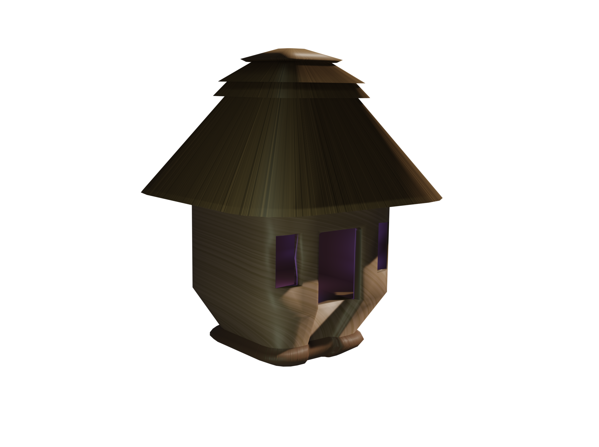
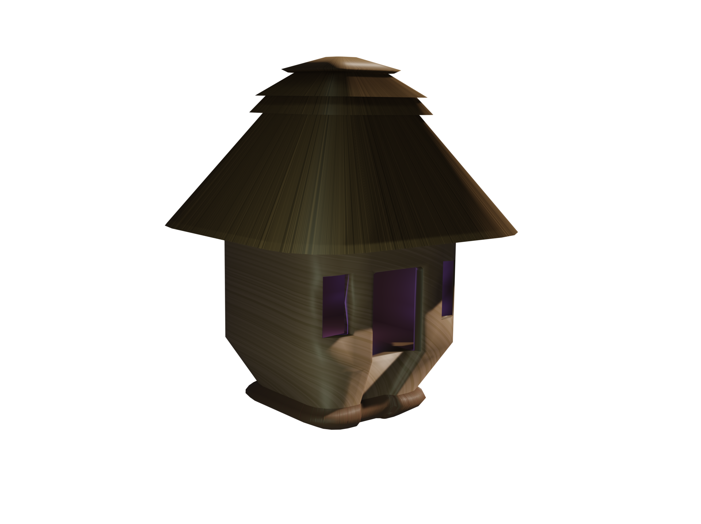

Fairy Houses
Overview
I made these fairy houses as part of a group project for my Design Foundations class, in which we were tasked with creating a pitch for a new monument on campus. We decided to create a hidden fairy garden, where students could go to find a little magic and whimsy. I was responsible for creating the 3D models of the houses, which were inspired by mushrooms and tree houses.
Gallery
 

Development Process
Research & Planning